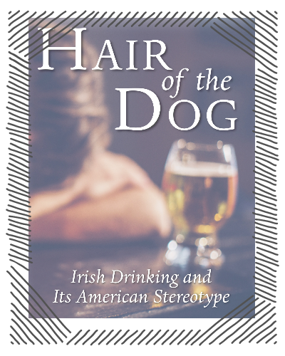

Зелёный дракон.Довольно неплохой коктейль, который лучше подавать людям страдающим с похмелья в горячем виде. Неизвестно его происхождение и место начала распостранения, но поговаривают, что он неплохо помогает тем, кто страдает после весёлой вечеринки утренними головными болями. Так что можете быть уверены, после употребления "Green dragon"- хорошее настроение к вам обязательно вернётся. Как вариант текиллу можно заменить анисовой водкой или джином. Рецепт коктейля "Зелёный дракон"- 300 мл. горячего зелёного чая
- 1-2-е чайных ложки сахара или мёда
- 100 мл. текиллы
- 1-а долька лимона
|


Другие воскрешающие коктейли
|